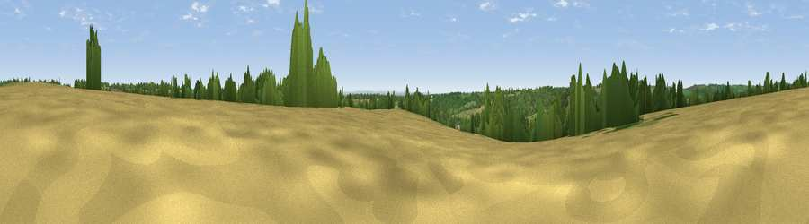

Viewpoint near Rendcomb
#22012 in England · top 43% of its area beats it · near RendcombThe view, rendered

A 360° render of this exact spot computed from the terrain model, tree cover and land cover — summer colours, afternoon light, calibrated against photographs of famous viewpoints. Real trees, hedges and buildings will differ in detail.
The panorama
Grey silhouette: terrain skyline in each direction (720 bearings, Earth curvature and refraction included). Dashed green: skyline with trees (+15 m) and buildings (+8 m) as obstacles. Blue strip: how far the ground is visible on each bearing.
Where the view opens
Wedge length = distance to the farthest visible ground on that bearing (vegetation-aware). Rings at 10, 25 and 50 km.
What fills the view
39% grassland · 32% woodland · 29% cropland
Angular shares of the visible panorama (visual magnitude), not map area. Landscape diversity 0.49 (0–1 Shannon).
Key numbers
More beautiful places nearby
The staircase of upgrades: each row has a higher view potential than everything closer. Driving times are estimates from straight-line distance, calibrated against real road routing — check an actual route before setting out.
| Place | Direction | Drive | Score |
|---|---|---|---|
| Pen Hill | WNW · 3 km | ~7 min | 66.4 |
| Viewpoint near Charlton Kings | NW · 8 km | ~16 min | 70.0 |
| Viewpoint near Leckhampton | NW · 9 km | ~18 min | 71.8 |
| Viewpoint near Leckhampton | NW · 10 km | ~19 min | 73.7 |
| Viewpoint near Leckhampton | NW · 10 km | ~19 min | 77.8 |
| Viewpoint near Great Witcombe | WNW · 13 km | ~24 min | 80.5 |
| Nottingham Hill | NNW · 17 km | ~30 min | 80.9 |
| Viewpoint near Bredon's Norton | NNW · 29 km | ~46 min | 81.3 |
51.80416, -1.97131 · source: screening · position refined by local search. Computed location — check access rights before visiting.